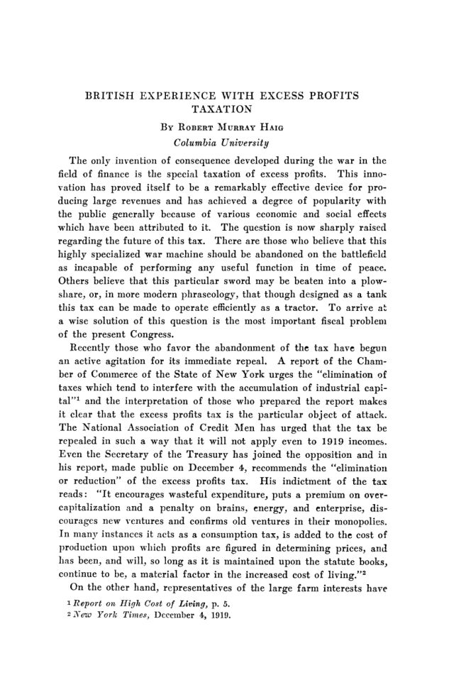

Haig e o imposto que a Inglaterra não queria abolir
Leitura: 9 min
Em Chicago, em 1919, Robert Murray Haig relata que a Inglaterra pretendia manter o imposto de guerra sobre lucros extraordinários e descreve o que ele ensinou sobre evasão, alíquotas e administração.


Haig abre seu texto com uma frase de efeito: o imposto especial sobre lucros extraordinários seria a única invenção relevante que a guerra produziu nas finanças públicas. Provou-se, diz, um meio notavelmente eficaz de arrecadar grandes somas e ganhou popularidade pelos efeitos econômicos e sociais que lhe atribuíam. No fim de 1919, a pergunta era se essa máquina de guerra deveria ser abandonada no campo de batalha ou adaptada à paz; na imagem do autor, se o tanque poderia trabalhar como trator.
“A única invenção de importância desenvolvida durante a guerra no campo das finanças.” (“The only invention of consequence developed during the war in the field of finance.”)
O texto abriu a primeira sessão da reunião de Chicago, em 29 de dezembro de 1919, sobre se o imposto deveria ficar como parte permanente do sistema tributário. Haig, da Columbia University, considera essa a questão fiscal mais importante do Congresso daquele momento.
Quem queria o fim do imposto?
Haig enumera os adversários. A Câmara de Comércio do Estado de Nova York pedia a eliminação dos impostos que atrapalham a acumulação de capital industrial, e a associação nacional dos gestores de crédito queria a revogação já para os rendimentos de 1919. O próprio secretário do Tesouro, em relatório divulgado em 4 de dezembro, recomendara eliminar ou reduzir o imposto, acusando-o de estimular desperdício, premiar a sobrecapitalização, punir a iniciativa e encarecer o custo de vida. Do outro lado, representantes dos grandes interesses agrícolas defendiam manter os impostos de renda e de lucros.
A campanha pela revogação, observa, tinha três alvos misturados: o tamanho total da tributação federal, a tributação das empresas em geral, comparada com alternativas como impostos de consumo, e o imposto de lucros extraordinários como forma específica. Até ali, diz, a análise ficara quase só com quem pagava o imposto, e por isso não podia ser chamada de científica nem de desapaixonada. Para obter dados, a comissão de finanças de guerra da associação decidira, na primavera de 1919, investigar a experiência britânica: a Inglaterra fora a primeira a criar o imposto e o administrava havia cinco anos.
Por que os britânicos iam mantê-lo?
A conclusão contrariava a impressão corrente. Muitos empresários ingleses esperavam que Austen Chamberlain abolisse o imposto no orçamento seguinte, depois de tê-lo reduzido de 80% para 40%. Haig leu o discurso do orçamento de 1919 e concluiu que o ministro previa sua continuação de alguma forma; a única ressalva era política, pois um governo trabalhista provavelmente tentaria um pesado imposto sobre o capital.
O motivo não era simpatia. A administração fiscal, instalada em Somerset House, encarava a tarefa com apreensão; os empresários se enfureciam com a ideia; o público, que culpava o imposto pela alta de preços, já não o apoiava; e os líderes trabalhistas mais radicais visavam a nacionalização de minas e ferrovias. O imposto ficaria porque a Inglaterra precisava de somas enormes e as alternativas, um imposto sobre o capital ou impostos sobre o consumo, despertavam rejeição maior.
“Embora não achem a frigideira confortável, preferem-na ao fogo.” (“While they do not find the frying pan comfortable, they prefer it to the fire.”)
Haig acrescenta um dado sobre as preferências britânicas: o imposto sobre artigos de luxo, que servira de modelo ao americano, fora considerado complicado demais e nunca entrara em vigor. Para quem temia a concorrência inglesa, nota ainda, o imposto britânico continuaria pesando sobre os preços de lá.
Que forma teria o imposto permanente?
O mais interessante, para Haig, era a forma. Os britânicos reconheciam que o padrão dos lucros de antes da guerra, traço distintivo de sua lei, ficava mais anômalo a cada ano, enquanto o padrão do capital investido, traço da lei americana de 1917, servia tanto a um imposto temporário quanto a um permanente. A proposta mais provável adotava esse padrão, com alíquotas moderadas e progressivas, numa escala parecida com a da lei americana de 1917.
A proposta resolvia problemas que também preocupavam os americanos: os britânicos não viam justiça em limitar o imposto às sociedades anônimas, tratavam as empresas com pouco capital por meio de uma escala de deduções de salários em vez de isentá-las e, como lá a valorização de bens não era renda tributável, preferiam avaliar os ativos pelo custo para o primeiro dono, mesmo depois de vendidos, para evitar evasão.
O que o imposto pesado ensinou?
Os efeitos observados no verão de 1919 não eram animadores. Havia sinais de que o imposto reprimira a atividade, levara a gastos extravagantes e fora muito evadido; o efeito sobre preços era incerto. Haig atribui boa parte desses males ao peso das alíquotas e ao caráter temporário do imposto, não ao princípio.
Nenhuma empresa quebrara por causa do imposto, mas por causa de uma política de cobrança flexível: o Tesouro podia conceder prazos a quem tinha dificuldade. O privilégio fora abusado, e os atrasados chegavam a cerca de £ 200 milhões, quatro vezes a arrecadação esperada para o ano. Haig prefere o rigor americano.
Sobre preços, cita Sidney Webb, para quem atribuir ao imposto a alta de bens não controlados era ignorância pura, opinião partilhada pela maioria dos economistas. Os empresários, ao contrário, diziam ter aumentado preços por causa dele. Haig suspeita que, em alguns casos, o imposto servia de desculpa para preços de monopólio; num mercado competitivo, um imposto cobrado só depois de lucros moderados dificilmente eleva preços diretamente. Nos contratos com o governo, porém, o imposto era tratado como custo, e o próprio governo criava os lucros que depois tributava.
As formas de evasão, escreve, eram infinitas. Um dono de seringal adiava a sangria das árvores até o fim do imposto; fábricas gastavam em publicidade, filiais deficitárias, reformas e bonificações que renderiam no futuro. Quando o governo levava £ 86 de cada £ 100 de lucro excedente, valia comprar qualquer coisa de £ 100 que valesse £ 14 para o contribuinte; mesmo com 40%, a carga combinada era de 58%, e um empresário lhe disse haver algo de mágico na marca de 50%. Havia ainda comércio de empresas falidas que tinham bons registros de antes da guerra e subavaliação de estoques.
Durante a guerra, a evasão aberta fora pequena, quase traição; depois do armistício, virara um jogo. Reginald McKenna, que criara o imposto como ministro das Finanças, comentou que a Receita levara desde 1842 para montar um imposto de renda difícil de evadir e precisaria de outros cem anos para um imposto sobre lucros. Haig responde que muitos expedientes só funcionavam porque o imposto era temporário.
O que os Estados Unidos deveriam copiar?
A administração britânica, diz, era melhor que a americana. As avaliações eram feitas localmente por funcionários permanentes e qualificados, que conheciam os negócios e podiam fazer acordos definitivos. Os recursos iam a juntas que não pertenciam ao Tesouro, perto da casa do contribuinte, e um Board of Referees tratava de pedidos de indústrias inteiras. Haig lamenta o fim do conselho tributário consultivo americano.
Resume as lições em seis pontos, a partir da imagem de J. C. Stamp: o imposto é uma desnatação preliminar dos potes de creme mais ricos. Os britânicos queriam mantê-lo; achavam o padrão de antes da guerra superado; aceitavam tratamento diferenciado para lucros obtidos com grande risco; queriam um imposto leve, porque o pesado gera extravagância; e permanente, porque o temporário é facilmente adiado. E reconheciam as enormes dificuldades administrativas.
“Uma desnatação preliminar dos potes de creme mais ricos.” (“A preliminary skimming of the richer crocks of cream.”)
Para os Estados Unidos, a conclusão é condicional. Se a arrecadação fosse mantida, como queria o secretário do Tesouro, as alternativas, o imposto geral sobre vendas do senador Smoot e o aumento da alíquota normal do imposto de renda proposto pelo secretário Glass, seriam piores: a primeira distribuiria o ônus ao acaso nos preços, e a segunda sobrecarregaria a administração, enfraqueceria a progressividade nas rendas baixas e passaria o peso dos investidores para rendas do trabalho moderadas. Mas Haig pede que se conteste a própria manutenção da arrecadação, com corte de gastos, e afirma que não se deve pensar em manter o imposto sem melhorar radicalmente a administração.
Na minha leitura
Na minha leitura, o texto de Haig é uma aula sobre como a incidência real de um imposto depende de sua duração esperada. Os mesmos contribuintes que, sob um imposto temporário, adiam receitas e antecipam despesas deixariam de fazê-lo sob um imposto permanente; boa parte do que se atribuía ao princípio do imposto vinha, segundo ele, de seu prazo e de sua alíquota.
A outra lição é que a escolha tributária se faz entre alternativas, não contra um ideal. Haig não defende o imposto por suas virtudes, mas por comparação com o imposto sobre vendas e com a alta da alíquota normal, e condiciona tudo à qualidade da máquina de cobrança. É um raciocínio que continua valendo para qualquer debate sobre bases tributárias.
Glossário
- Imposto sobre lucros extraordinários
- imposto que incide sobre o lucro que excede um retorno considerado normal, medido por lucros passados ou pelo capital investido.
- Padrão do capital investido
- base que mede o lucro normal como uma porcentagem do capital aplicado na empresa, adotada na lei americana de 1917.
- Imposto sobre o capital
- cobrança extraordinária, de uma só vez, sobre o patrimônio, discutida na Inglaterra como alternativa para reduzir a dívida de guerra.
- Board of Referees
- tribunal britânico criado para decidir pedidos de indústrias inteiras sobre o retorno admitido no cálculo do imposto.
Fontes
- British Experience with Excess Profits Taxation — Robert Murray Haig, Columbia University (pp. 1–14). JSTOR · Internet Archive (PDF)
- Edição completa, com os demais artigos: Nº 163 do Arquivo.
Documento em domínio público (EUA, publicado antes de 1931), via JSTOR Early Journal Content e Internet Archive. Resumo e comentário do autor deste site, sem afiliação com a American Economic Association. Encontrou um erro? Escreva: a correção é publicada no próprio texto, com data.
↑ Nº 163 · Chicago, 1919: impostos de guerra, reparações e preços da paz Taussig e a reparação que só podia ser paga em mercadorias →